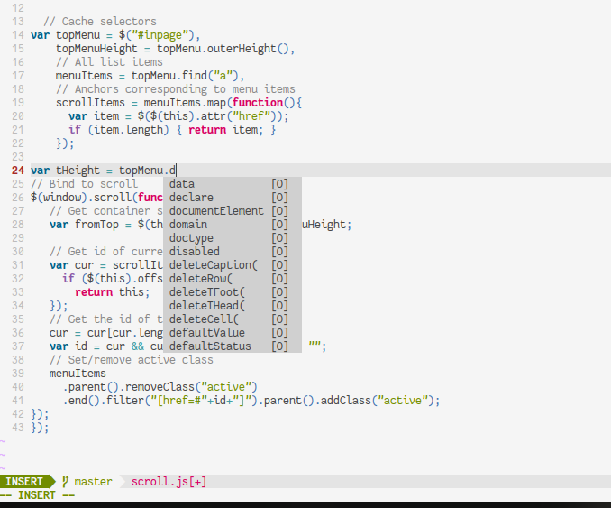

Tips for SSH, Vim, iTerm, and more
CS 110 is many students’ first experience working with complex projects on the command line. In this handout, I’m attempting to aggregate resources that may help you become more efficient. I use Mac OS, iTerm, and vim, and unfortunately I don’t know of too many resources for other platforms, but please make suggestions and I’ll aggregate the tools you all find helpful!
General SSH tips
Avoid SSH timeouts
If you let an SSH session sit too long without activity (sometimes even as short as a few minutes), you’ll often get connection issues:
Write Failed: broken pipe
This is easy to mitigate by adding the following to ~/.ssh/config (you may
need to create this file if it doesn’t exist):
Host *
ServerAliveInterval 60
This works on Mac and Linux. It may also apply to Windows, depending on which terminal emulator you’re using (it should apply if you’re using Ubuntu on Windows).
Avoid having to type your password every time
Add this to your ~/.ssh/config, replacing yourSunetId with your Stanford username:
Host myth myth.stanford.edu
HostName myth.stanford.edu
User yourSunetId
ControlMaster auto
ControlPath ~/.ssh/%r@%h:%p
ControlPersist yes
Now, you can simply type ssh myth. The first time, it’ll ask you for your
password, but if you fire up more SSH sessions after that, it log in without
asking for credentials.
This works on OS X, and I believe it should work on Linux as well. If you’re using Ubuntu on Windows, you can try it, but I have no idea if it works.
Terminal emulators
iTerm2 (OS X)
iTerm is a replacement for the Terminal.app that ships with all Macs. I highly recommend it; it’s loaded with way more features than I know how to use, but also designed very well such that those features never get in your way. You can download it and start using it without knowing anything about it in particular. The features I use most often:
- Split panes and split navigation (I am a vim user, and mapped “go left” to cmd+option+H, “go right” to cmd+option+L, etc).
- Quick scrollback reset options
- Better tabbed navigation
- A better search function
- “Instant replay,” to see a history of things printed to the terminal
- A built-in password manager
Vim plugins/tips
If you are new to vim, you can run vimtutor in your shell to get a
minimalistic text-based tutorial on how to use the editor. Even if you know
your way around, it may be worth skimming through the text; you may find
something useful you didn’t know existed. OpenVim is
a nice interactive tutorial, and, if memory serves me correctly, it’s how I got
started with vim. Wikia has a good vim
cheat sheet.
There are many more features of vim than I can list here that make it
worthwhile to learn; sessions, macros, integrated make, a huge ecosystem of
plugins, and many other features make it more powerful than many other editors
around. I’m only listing some tips that I think offer huge time savings, but
there’s a lot more to learn!
Motions
I think one of the biggest reasons people find vim painful is that it takes them so long to move around a codebase and do the most basic things. There is definitely a steep learning curve, but motions in vim are designed such that if you learn how to use them well, you’ll be faster than in any other editor.
You should get familiar with basic vim motions (h is left, j is down, k
is up, l is right… You can repeat motions, e.g. 5j is “move 5 lines
down”). It’s tempting to just use the arrow keys (or your mouse), but if you
practice using these motions, they eventually become second nature, and are
much faster than the navigation you may be used to.
Other useful motions:
^is “move to the start of the line,” and$is “move to the end of the line”bis “move to the previous word,” andwis “move to the next word”}is “move to the next paragraph” (or the next chunk of code), and{is “move to the previous paragraph”%means “move to the matching bracket or parentheses” (e.g. if you’re at the opening bracket of a function and want to move to the end of a function)fallows you to jump to the next occurrence of a character, andFallows you to jump to the last occurrence of a character. (e.g.f(will move you to the next open parentheses)
Motions are so useful because they can be combined with verbs. y is the copy
verb; y3j means “copy the next 3 lines,” and y} means “copy from here until
the end of the paragraph.”
Relative line numbers
Relative line numbering is super useful. It makes your line numbers look like this:
If I want to delete from the current line (line 6) to the line reading set incsearch, I can look at the relative line numbering to the left, see that the
desired line is 5 lines down, and hit d5j. This makes
deleting/copying/selecting chunks of text so much easier.
When I switched, I found I didn’t miss absolute line numbering at all. If I
needed to go to a specific line of a file, I’d just type the number in and hit
gg to jump to that line (e.g. 55gg to go to line 55).
To enable this behavior, add the following to your ~/.vimrc:
set number
set relativenumber
Enable mouse interaction
I think this is now already enabled in the default .vimrc for new users at
Stanford, but I’m not sure. If you add set mouse=a to your vimrc, you can
click around in the editor, scroll, drag to highlight, etc… In general, it is
better/faster to use a keyboard to navigate and do things, but sometimes being
able to use a mouse is nice.
Search
Add these lines to your .vimrc:
" Show search results as you type
set incsearch
" Highlight all search results
set hlsearch
You can search using the / character (e.g. type /hello to find instances of
“hello” in your code). Press n to jump to the next instance of the search
result and N to jump to the previous instance.
Split screening
Being able to see multiple files at the same time is super, super useful in this class!
For easy split navigation, add this to your .vimrc:
nnoremap <C-J> <C-W><C-J>
nnoremap <C-K> <C-W><C-K>
nnoremap <C-L> <C-W><C-L>
nnoremap <C-H> <C-W><C-H>
set splitbelow
set splitright
Now, to split the screen horizontally (i.e. to have two panes, one above each
other), in command mode, type :sp (for “split”). To split the screen
vertically (i.e. to have two panes side by side), type :vsp. To move up
(assuming you have the above nnoremaps in your config), press ctrl+k; to move
down, press ctrl+j; to move left, press ctrl+h; and to move right, press
ctrl+l.
Once you are in a split pane, you can load a file using :e filename, or using
FZF (see below).
More on splits:
- https://robots.thoughtbot.com/vim-splits-move-faster-and-more-naturally
- http://vimcasts.org/episodes/working-with-windows/ (video)
Marks
Sometimes, you’re working on some portion of code, and you want to briefly
glance up at some other part of a file before returning to where you’re
working. You can set a mark where you’re currently working by typing ma
(mark a), then scroll up to wherever you want to go, and then jump back down
to where you were before by typing 'a (go back to mark a). You can set
multiple marks if you want (e.g. mb will set mark b), but I generally can
only keep track of one in my head…
Vundle
The following tips involve vim plugins. Vundle is a plugin manager to make installing things easy. To install Vundle, run the following:
git clone https://github.com/VundleVim/Vundle.vim.git ~/.vim/bundle/Vundle.vim
Then, add the following towards the top of your .vimrc (if any of the
following lines are already in your vimrc, you can omit them):
set nocompatible " be iMproved, required
filetype off " required
" set the runtime path to include Vundle and initialize
set rtp+=~/.vim/bundle/Vundle.vim
call vundle#begin()
" let Vundle manage Vundle, required
Plugin 'VundleVim/Vundle.vim'
" Keep Plugin commands between vundle#begin/end.
" ---------- ADD Plugin DECLARATIONS HERE ---------
" All of your Plugins must be added before the following line
call vundle#end() " required
filetype plugin indent on " required
My tips below mention Plugin declarations. Add those lines where indicated at
the dashed line above. Every time you add a new plugin to your .vimrc, save
the .vimrc file and then run :PluginInstall to install the new plugin.
Deoplete (autocomplete)
Deoplete provides autocomplete suggestions, making vim behave a bit more like an IDE.

To use it, you will need vim 8 and Python 3.6.1. All the myth machines are
running vim 8, but if you are doing this on your personal computer, you may
need to upgrade. (Try brew install vim on a Mac.) You will also need to
install pynvim:
pip3 install --user pynvim
Then, you can add the following to your vim config:
Plugin 'Shougo/deoplete.nvim'
Plugin 'roxma/nvim-yarp'
Plugin 'roxma/vim-hug-neovim-rpc'
let g:deoplete#enable_at_startup = 1
" deoplete tab-complete
inoremap <expr><tab> pumvisible() ? "\<c-n>" : "\<tab>"
If you can’t use vim 8 for whatever reason, YouCompleteMe is another good autocomplete alternative.
fzf (Fuzzy file finder)
fzf is an excellent plugin for quickly navigating to files without closing vim. You may see me do this in lecture; I press my spacebar twice, enter a few characters that are part of the filename I want, then select the desired file, and voila, it’s open!
It has been a long time since I installed this, and I’m forgetting some details. Try these instructions and please let me know if you run into problems on myth.
Run this in your shell:
git clone --depth 1 https://github.com/junegunn/fzf.git ~/.fzf
~/.fzf/install
Then add this to your .vimrc (see Vundle instructions above):
set rtp+=~/.fzf
Plugin 'junegunn/fzf'
Plugin 'junegunn/fzf.vim'
" This is the default extra key bindings
let g:fzf_action = {
\ 'ctrl-t': 'tab split',
\ 'ctrl-x': 'split',
\ 'ctrl-v': 'vsplit' }
" Default fzf layout
" - down / up / left / right
let g:fzf_layout = { 'down': '~40%' }
" space space to open fzf file finder
let mapleader = "\<Space>"
nnoremap <silent> <leader><space> :Files<CR>
" Enable hidden buffers (don't need to save when switching files)
set hidden
Press “space space” to open fzf. To open a file, hit enter. To split the screen vertically and open the file in the new split pane, press ctrl+v; to split horizontally, press ctrl+x.
ag (Silver Searcher)
ag lets you quickly find files
containing a search term. Need to know where the inode struct is defined?
Just type :Ag struct inode { and you can easily open ino.h from there.
Again, it has been years since I installed this, and the installation instructions have since changed, so let me know if you run into problems.
You’ll need to install ag first; on Mac,
this is just brew install the_silver_searcher, but check the linked README
for instructions on other platforms. Then, add this to your .vimrc:
Plugin 'mileszs/ack.vim'
let g:ackprg = 'ag --vimgrep --smart-case'
cnoreabbrev ag Ack
cnoreabbrev aG Ack
cnoreabbrev Ag Ack
cnoreabbrev AG Ack
Airline
This is a really great plugin for formatting the vim display. I have it showing my currently-open files at the top of the screen, and I can press “space 3” to switch to the 3rd “tab.”
Plugin 'vim-airline/vim-airline'
let g:airline#extensions#tabline#enabled = 1
"set airline
let g:airline#extensions#tabline#tab_nr_type = 1 " tab number
let g:airline#extensions#tabline#show_tab_nr = 1
let g:airline#extensions#tabline#formatter = 'default'
let g:airline#extensions#tabline#buffer_nr_show = 1
let g:airline#extensions#tabline#fnametruncate = 20
let g:airline#extensions#tabline#fnamecollapse = 2
let g:airline#extensions#tabline#buffer_idx_mode = 1
nmap <leader>1 <Plug>AirlineSelectTab1
nmap <leader>2 <Plug>AirlineSelectTab2
nmap <leader>3 <Plug>AirlineSelectTab3
nmap <leader>4 <Plug>AirlineSelectTab4
nmap <leader>5 <Plug>AirlineSelectTab5
nmap <leader>6 <Plug>AirlineSelectTab6
nmap <leader>7 <Plug>AirlineSelectTab7
nmap <leader>8 <Plug>AirlineSelectTab8
nmap <leader>9 <Plug>AirlineSelectTab9
Rust-specific plugins
Rust.vim
Rust.vim provides Rust syntax
highlighting and formatting, and sets a foundations for some other plugins
(such as Syntastic). I would highly recommend installing this. Note that this
plugin requires vim 8 for full functionality. Vim 8 is already installed on
myth, but if you are installing on your local machine, you may need to upgrade
(e.g. brew install vim on Mac).
Here’s my vim config:
Plugin 'rust-lang/rust.vim'
let g:rustfmt_autosave = 1
This will run rustfmt on save, so that your code is automatically formatted
for standard style.
Syntastic
Syntastic checks your code for syntax errors. This plugin requires that you have Rust.vim installed. I have it configured so that every time I save, it will highlight any compiler errors, which is pretty handy.
The following is my vim configuration:
Plugin 'vim-syntastic/syntastic'
let g:syntastic_always_populate_loc_list = 1
let g:syntastic_auto_loc_list = 1
let g:syntastic_check_on_wq = 0
Vim Racer
Vim Racer is probably the most
useful Rust vim plugin in my opinion. It adds “smart” autocomplete options; for
example, if you type SomeStruct., it will list the fields inside of
SomeStruct as autocomplete options. Additionally, it allows you to jump to
code definitions. If you have your cursor on a function, you can type gd to
go to the definition of that function (or gs to open the definition
in a split pane, gx to open in a vertical split pane, or gt to open in a
new tab). This even works with library functions, which is quite useful when
you’re trying to figure out how a function is supposed to be used and you want
to jump to its source code and comments without having to search online.
You’ll need to install racer before you can use this plugin.
Plugin 'racer-rust/vim-racer'
set hidden
let g:racer_cmd = "/Users/reberhardt/.cargo/bin/racer"
let g:racer_experimental_completer = 1
augroup Racer
autocmd!
autocmd FileType rust nmap <buffer> gd <Plug>(rust-def)
autocmd FileType rust nmap <buffer> gs <Plug>(rust-def-split)
autocmd FileType rust nmap <buffer> gx <Plug>(rust-def-vertical)
autocmd FileType rust nmap <buffer> gt <Plug>(rust-def-tab)
autocmd FileType rust nmap <buffer> <leader>gd <Plug>(rust-doc)
augroup END
Emacs
Sadly, I know so little about emacs that I’m not sure I even know how to save a file. Please send me recommendations, and I’ll post them here!
- Spacemacs (suggested by Jason C)
For Rust, check out rust-mode.
Sublime Text
Supposedly, Rust support in Sublime is pretty good already, but the Rust Enhanced plugin adds some extra features.
IntelliJ
If you’ve never used IntelliJ before, you should check it out; it’s a very powerful and capable editor, and the professional edition is free for students! Do note, however, that it is a pretty big memory hog and tends to slaughter my Macbook Air.
If you’re using IntelliJ, check out the official Rust plugin.
Other fun things
- zsh is my shell of choice, supporting many nice features over bash. (Honestly, I depend on so many tiny features that I don’t even remember them being unique to zsh anymore.) oh-my-zsh makes it easy to try it out.
- Mosh is an alternative to SSH that is much more robust over shaky networks and handles intermittent connectivity well. I haven’t tried it myself, but I have heard great things and have wanted to try it for a long time. Please let me know if you give it a spin.